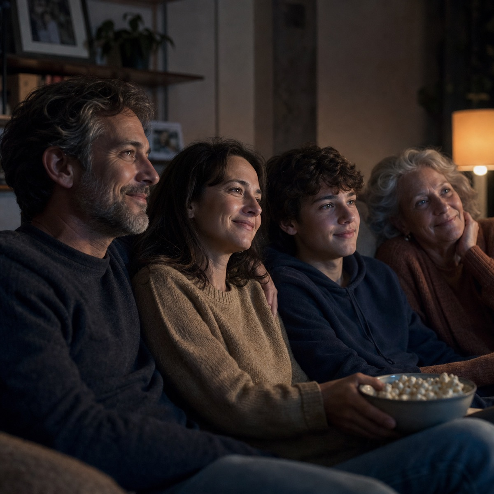

Momentro Guides · Family films
What to do with years of unwatched family videos
You do not need to organise your whole history before you can make one film your family will be glad to watch together.

The videos are not a failure because they are still there
Most family footage grows quietly. A birthday on one phone. A school play on another. A few clips sent by grandparents, old files on a drive, an outing that someone meant to put together “when there is time.” Then another year passes.
It is easy to look at all of that and feel behind. But the fact that you kept filming means the moments mattered. The archive does not need to become a perfect system before it can become something you share.
Choose one small chapter
Do not start with every year, every device, or the entire family cloud folder. Start with one season, one trip, one birthday, or one person at a particular age.
A small chapter gives you a real finish line. It also makes the choices kinder: you are not deciding which memories deserve to exist. You are deciding which ones belong in this one viewing.
Look for the clips that bring people back
The technically best clip is not always the one that belongs. Often it is the tiny voice in the background, the messy cake, the dog walking through the frame, or the few seconds before everyone realises the camera is on.
Keep the clips that make someone in the room say, “I remember that.” Let the rest stay where they are. They are not being erased; they are simply not carrying this particular film.
One warm, watchable film is more useful than a heroic plan to sort everything that never gets started.
Give the long work to the computer
Family footage is often spread across phones, cameras, drives, and shared folders. Bringing a selected set together and processing it can take time, especially when there are a lot of files. That time depends on the footage and the computer, not on how well you have organised your life.
With Momentro, place a selected set on your computer, start the analysis, and get on with the evening. Later, return to review the draft, make a small change if you want to, and export when it feels right.
A gentle first project
- Name one chapter: “summer at the lake,” “Maya at five,” or “the year we moved.”
- Gather only the clips that belong to it.
- Start with the people and moments you would be happiest to see again.
- Let the first draft exist before asking it to be perfect.
- Watch it with someone when you can.
Start with one chapter worth returning to.
Momentro helps you turn selected family and travel clips into a draft you can review and export on your computer.